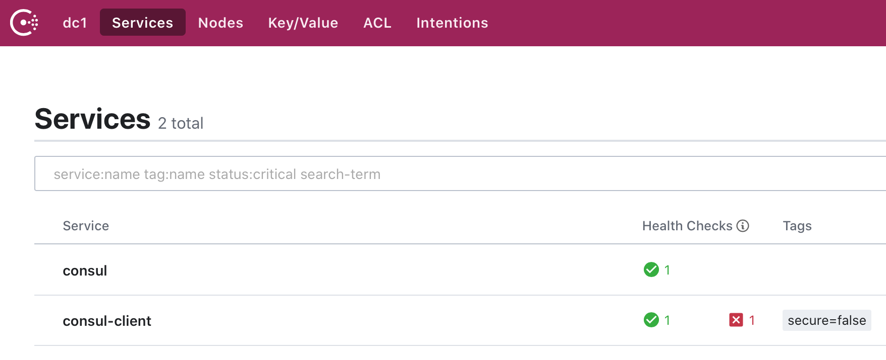

服务治理指的是服务的注册和发现，早些时候 Spring Cloud 的服务治理使用 Eureka，现在推荐使用 Consul。
可以参考 Spring Cloud Consul 以及 Spring Cloud 构建微服务架构: 服务注册与发现 (Eureka、Consul) 了解更多信息。
1. Consul 服务器
访问 https://www.consul.io 下载 Consul，然后执行 ./consul agent -dev 启动 Consul 服务器 :
$ ./consul agent -dev
==> Starting Consul agent...
Version: 'v1.6.3'
Node ID: '4393e117-c621-2423-c4c5-aee4200e63ba'
Node name: '192.168.0.105'
Datacenter: 'dc1' (Segment: '<all>')
Server: true (Bootstrap: false)
Client Addr: [127.0.0.1] (HTTP: 8500, HTTPS: -1, gRPC: 8502, DNS: 8600)
Cluster Addr: 127.0.0.1 (LAN: 8301, WAN: 8302)
Encrypt: Gossip: false, TLS-Outgoing: false, TLS-Incoming: false, Auto-Encrypt-TLS: false
与 Eureka 不同的是，Consul 服务器不需要我们自己写服务器端程序，直接运行即可。
2. Consul 客户端
Consul 客户端也就是我们的服务提供方和服务消费者，实现步骤如下:
- 创建一个基础的 Spring Boot 应用
- 引入 Consul 依赖
- 配置 Consul 服务器信息
- 在启动类上使用注解
@EnableDiscoveryClient启用服务注册和发现 - 健康检查
2.1. 引入 Consul 依赖:
dependencies {
implementation 'org.springframework.cloud:spring-cloud-starter-consul-discovery'
}
dependencyManagement {
imports {
mavenBom "org.springframework.cloud:spring-cloud-dependencies:Hoxton.SR1"
}
}
2.2. 配置 Consul 服务器信息:
在 application.properties 中配置:
server.port = 8080
spring.application.name = consul-client
# Consul 服务治理中心
spring.cloud.consul.host = localhost
spring.cloud.consul.port = 8500
其中:
spring.application.name为 Consol 的服务列表中服务的名字spring.cloud.consul.host和spring.cloud.consul.port为 Consol 的服务器信息
2.3. 在启动类上使用注解 @EnableDiscoveryClient 启用服务注册和发现:
package com.xtuer.consulclient;
import org.springframework.boot.SpringApplication;
import org.springframework.boot.autoconfigure.SpringBootApplication;
import org.springframework.cloud.client.discovery.EnableDiscoveryClient;
@SpringBootApplication
@EnableDiscoveryClient
public class ConsulClientApplication {
public static void main(String[] args) {
SpringApplication.run(ConsulClientApplication.class, args);
}
}
既能够在 Consul 上注册自己，同时也能够发现其他 Service Provider 提供的服务，也就是说，既可能是服务提供方，也可能是服务的消费者。通过应用名 + URL 就能够进行服务调用了。
3. Consol 管理界面
打开 http://localhost:8500 就可以看到 Consol 的管理界面了。

4. 健康检查
从上图中可以看到，consul-client 有一个红色的 x 提示，说明没有配置健康检查。
启用健康检查:
- 引入 actuator 依赖
- 配置健康检查
4.1. 引入 actuator 依赖:
implementation 'org.springframework.boot:spring-boot-starter-actuator'
4.2. 配置健康检查:
spring.cloud.consul.discovery.healthCheckPath = /actuator/health
spring.cloud.consul.discovery.healthCheckInterval = 1s